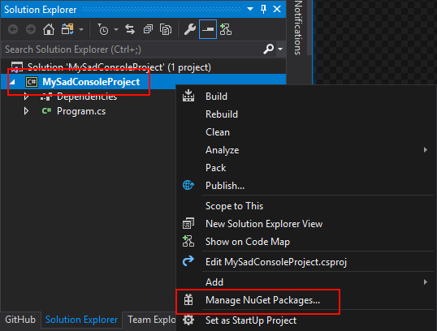

NuGet Starter for MonoGame
This article describes how to setup SadConsole with a new project in Visual Studio.
It is recommended that you use .NET Core to create your SadConsole game. To do so, follow the .NET Core tutorial.
First, create a new project in Visual Studio. Depending on your version, some dialogs will look different. If you are not familiar with Visual Studio, follow the Microsoft documentation on how to create a Visual Studio project.
Create a new .NET project
Using Visual Studio, create a new project. It is recommended that you create a new Console app. If using .NET Framework, target the latest version of .NET, or at a minimum, 4.6.1
NOTE
If you are going to use the MonoGame Game project template, read the MonoGame Template tutorial.
Setup SadConsole
With your project created in Visual Studio, do the following:
-
In the Solution Explorer, right-click on the project you created and click Manage NuGet Packages.

-
Search for and install a MonoGame.Framework package. You can use the desired platform.
- If you’re making a Windows & Linux game, choose MonoGame.Framework.DesktopGL
- If you’re making a Windows game, choose either MonoGame.Framework.WindowsDX or MonoGame.Framework.DesktopGL
- If you’re making a UWP game, choose MonoGame.Framework.WindowsUniversal
- If you’re making an Android game, choose MonoGame.Framework.Android
-
Search for and install the SadConsole package.
-
In the Solution Explorer, right-click on the project and click Properties.
-
Set the Output type to Windows Application.
-
Set the Startup Object to your the class defined by your program.

-
-
Open up your program.cs file.
-
Change the
usingstatements at the top of your code file to the following.1
2
3
4using System;
using SadConsole;
using Microsoft.Xna.Framework;
using Console = SadConsole.Console; -
Replace the
Mainmethod with the following code.1
2
3
4
5
6
7
8
9
10
11
12
13
static void Main()
{
// Setup the engine and create the main window.
SadConsole.Game.Create(80, 25);
// Hook the start event so we can add consoles to the system.
SadConsole.Game.OnInitialize = Init;
// Start the game.
SadConsole.Game.Instance.Run();
SadConsole.Game.Instance.Dispose();
} -
Next, add the
Initmethod referenced by the preceding code. This method is used to setup your starting console. This code should be added afterstatic void Main()block.1
2
3
4
5
6
7
8
9static void Init()
{
var console = new Console(80, 25);
console.FillWithRandomGarbage();
console.Fill(new Rectangle(3, 3, 23, 3), Color.Violet, Color.Black, 0, 0);
console.Print(4, 4, "Hello from SadConsole");
SadConsole.Global.CurrentScreen = console;
} -
Press F5 to run your game. You should see the following.

Success! You now have a basic SadConsole game running. The code in your program.cs file should look like the following:
1 | using System; |
If you’re using Visual Basic, your code would look like the following:
1 | Imports Console = SadConsole.Console |
Next steps
Now that you have the project created and working, check out the existing tutorials. These will walk you through the basics.